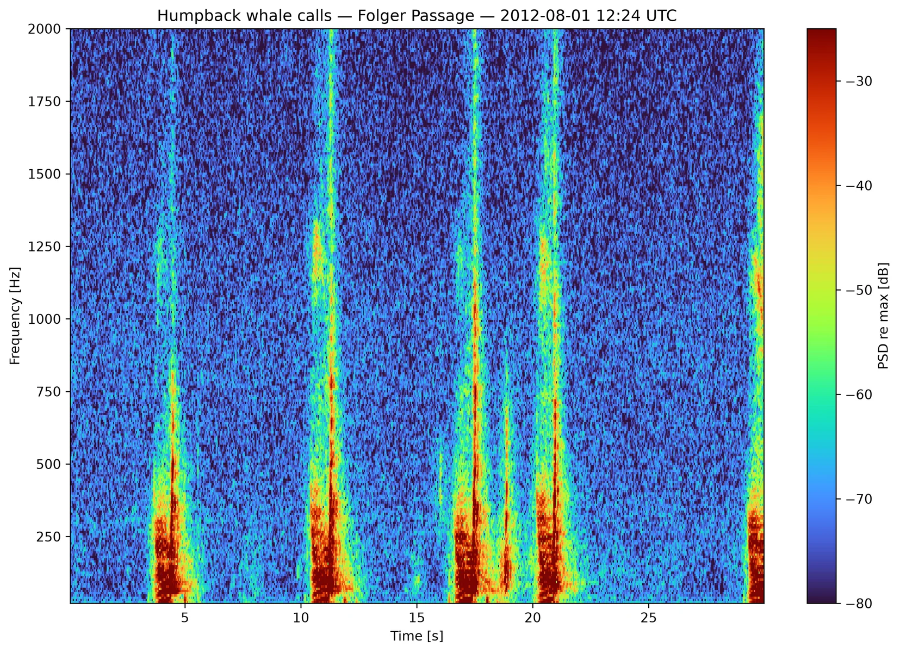
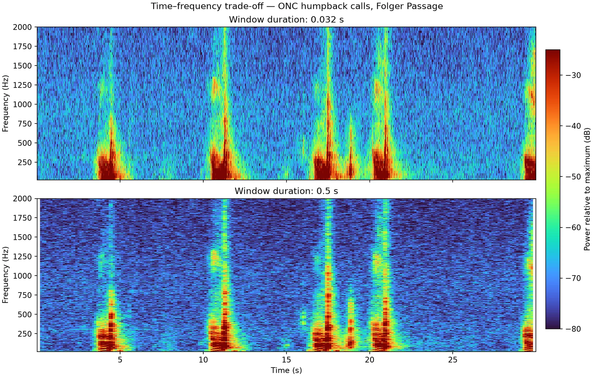

Generate Local Spectrograms¶
Local spectrograms are computed from downloaded FLAC/WAV audio. You control the FFT window, overlap, frequency range, colour scale, backend, and saved formats.
If you have not downloaded audio yet, start with Download Audio or the complete audio-to-spectrogram walkthrough.
Choose the local workflow¶
| Workflow | What it does | Clip-boundary handling |
|---|---|---|
process_single_file() / process_directory() |
Computes a spectrogram from a complete local audio file | Uses only complete STFT windows; it does not add artificial samples beyond the file |
clip_start / clip_end or --clip-start / --clip-end |
Computes a selected interval from local audio | Uses automatic half-window context by default, then removes it |
process_event() |
Computes around a known time in one local audio file | Automatically reads an extra half-window on each side, then removes that context |
--event-time command-line mode |
Command-line form of process_event() |
Same automatic half-window context and trimming |
create_custom_spectrograms_from_json() |
Downloads ONC audio for timestamped events and computes spectrograms locally | Automatically downloads extra context, computes the STFT, and trims back to the requested interval |
download_requests_from_json() |
Downloads spectrogram products computed by ONC | Processing at product boundaries is controlled by ONC |
Use create_custom_spectrograms_from_json() when you want the FFT and plotting
settings in the JSON file to control newly computed local spectrograms. Use
download_requests_from_json() when you want ONC's existing or
server-generated spectrogram products.
Process an audio directory¶
from pathlib import Path
from onc_hydrophone_data.audio import SpectrogramGenerator
audio_dir = Path("data/DEVICE/RUN/audio")
output_dir = audio_dir.parent / "custom_spectrograms"
generator = SpectrogramGenerator(
win_dur=0.5,
overlap=0.75,
freq_lims=(20, 10_000),
crop_freq_lims=True,
clim=(-60, 0),
log_freq=False,
)
results = generator.process_directory(
audio_dir,
output_dir,
save_plot=True, # PNG
save_mat=True, # MATLAB arrays + metadata
save_npy=False,
max_workers=4,
)
One successful result contains png_file, mat_file, audio metadata, and
processing settings. Batch results omit the large in-memory arrays by default
to keep memory use bounded.

The real ONC recording contains repeated humpback calls with acoustic energy that changes over time and frequency.
Choose useful parameters¶
| Setting | Start with | Effect |
|---|---|---|
win_dur |
0.5 s |
Longer windows improve frequency detail; shorter windows improve timing detail |
overlap |
0.5–0.75 |
Higher overlap creates more time columns and costs more compute |
freq_lims |
Your band of interest | Controls the plotted frequency range |
crop_freq_lims |
True for focused work |
Also removes out-of-band rows from MAT/NumPy output, saving disk and memory |
clim |
(-60, 0) |
Sets contrast in relative dB plots |
log_freq |
False initially |
Use True when several frequency decades must fit on one axis |
backend |
"auto" |
Uses an available optimized backend and falls back to SciPy when needed |
Window length trade-off¶

The short window keeps brief events narrow in time but produces broader frequency bands. The long window sharpens steady tones and sweeps in frequency but spreads short events across time.
Source recording
Both figures are generated by scripts/generate_docs_figures.py from a
public ONC recording made by ICLISTENHF1205 at Folger Passage on
2012-08-01 at 12:24 UTC. The script downloads ONC's public audio preview by
default, or accepts an ONC audio file with --audio-file. See the
ONC source record.
The plots use relative power and are not calibrated sound-pressure level.
Process one file¶
result = generator.process_single_file(
audio_dir / "example.flac",
output_dir,
save_plot=True,
save_mat=True,
save_npy=True,
)
print(result["png_file"])
print(result["mat_file"])
print(result["npy_file"])
Use the single-file form while tuning parameters, then process the whole directory after the output looks right.
Command-line workflow¶
From a cloned repository checkout:
python scripts/generate_spectrograms.py \
--input-dir data/DEVICE/RUN/audio \
--output-dir data/DEVICE/RUN/custom_spectrograms \
--win-dur 0.5 \
--overlap 0.75 \
--freq-min 20 \
--freq-max 10000 \
--crop-freq-lims \
--max-workers 4
Run python scripts/generate_spectrograms.py --help for every option.
Generate around a known signal time¶
Use event mode when a signal occurs at a known offset in an existing audio file. The default retains five seconds before and after the event. It also reads an extra half-window of audio on each side while computing the STFT, then keeps only frames centred inside the requested ten-second interval. This ensures that every retained time bin is calculated from a complete analysis window.
result = generator.process_event(
audio_dir / "example.flac",
output_dir,
event_time_seconds=123.4,
pad_before_seconds=5,
pad_after_seconds=5,
edge_padding_seconds="auto",
save_plot=True,
save_mat=True,
)
edge_padding_seconds="auto" is the default and resolves to half the actual
STFT window after the audio sample rate and any win_length override are known.
The resolved value, event time, target interval, and retained padding are stored
in the output metadata.
The same mode is available from the command line:
python scripts/generate_spectrograms.py \
--input-file audio/example.flac \
--event-time 123.4 \
--event-pad-before 5 \
--event-pad-after 5 \
--output-dir spectrograms
Generate local event spectrograms from JSON¶
For many labeled events, one workflow can download the needed audio context, clip each event, and generate local spectrograms:
from onc_hydrophone_data.data import HydrophoneDownloader
from onc_hydrophone_data.onc.common import load_config
onc_token, data_dir = load_config()
dl = HydrophoneDownloader(onc_token, data_dir)
results = dl.create_custom_spectrograms_from_json(
"custom_requests.json",
clip_pad_seconds="auto",
save_mat=True,
save_png=True,
)
{
"defaults": {
"deviceCode": "ICLISTENHF6324",
"pad_seconds": 10
},
"generator_defaults": {
"win_dur": 0.5,
"overlap": 0.75,
"freq_lims": [20, 10000],
"crop_freq_lims": true
},
"requests": [
{
"timestamp": "2024-04-01T12:30:00Z",
"label": "example event",
"generator_options": {
"log_freq": false
}
}
]
}
The workflow requests adjacent source files when padding crosses a five-minute
boundary. With clip_pad_seconds="auto", it adds half of the configured
win_dur on both sides before computing the STFT, removes that context before
relative-dB normalization, and returns only time bins centred inside the
requested event interval. This prevents incomplete-window artifacts at the
requested clip boundaries. If generator_options sets a sample-based
win_length that differs from win_dur, set clip_pad_seconds explicitly in
seconds so the download context matches that window.
This edge handling applies to spectrograms computed locally by this package.
Spectrograms returned by download_requests_from_json() or the other ONC
spectrogram download methods are computed by ONC and follow ONC's processing.
Understand the saved values¶
Pis the uncalibrated power spectrogram.PdB_normis power in dB relative to the maximum value in that file.Fcontains frequency-bin centres in hertz.Tcontains time-bin centres in seconds.- Metadata records the source audio and FFT/generator settings.
Important
Local outputs are not automatically calibrated sound-pressure levels. If you need ONC calibration or standardized server products, read Choose ONC Server Spectrograms.